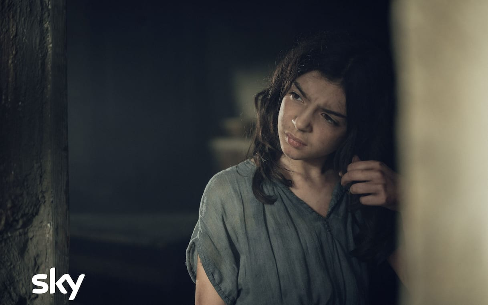

01 / SKY ORIGINAL✓ 最近看过

L’ARTE DELLA GIOIA
欢愉的艺术
在被安排好的人生里，
夺回属于自己的名字。
二十世纪初的西西里，Modesta 从贫困的童年走向修道院与贵族宅邸。欲望、知识与自由，推动她越过原本被划定的生活边界。
意大利电视剧 · 6 集导演 Valeria Golino改编自 Goliarda Sapienza 同名小说
认识故事中的人 ↓
THE PEOPLE IN THE STORY
她，与改变她命运的人。
Modesta 莫德斯塔
饰演者 · Tecla Insolia
出身贫困，却对知识、爱情与自由有强烈渴望。她不愿接受社会替自己安排的命运，是整部故事的行动中心。

Leonora 莱奥诺拉
饰演者 · Jasmine Trinca
收留年幼 Modesta 的修道院院长。她注意到女孩的聪明与倔强，并成为其成长早期的重要人物。
作品资料与图片来源 +
HAKUYA'S WATCH JOURNAL 已看 · 暂未写下个人短评